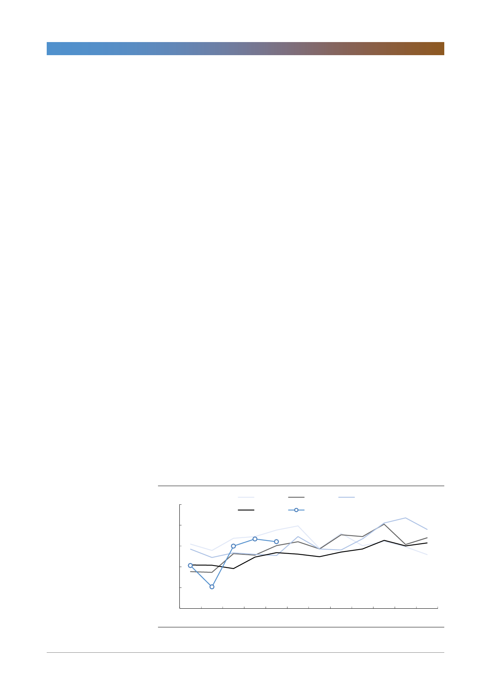

고려아연(010130)
중국의 환경보호? 경기가 우선이다!
중국 비철금속 산업연감에 따르면 2018년 중국의 아연 제련규모는 글로벌의
42.3%(한국은 8.2%)에 달한다. 중국 아연 제련소의 가동 현황이 spot TC는 물
론 글로벌 아연 가격의 방향성에 막대한 영향을 미칠 수밖에 없는 이유이다. 그렇
다면 향후 중국 아연 제련규모를 어떻게 추정할 수 있을까?
중국의 정책 방향성을 먼저 살펴보자. 중국은 2015년부터 중앙정부 차원에서 지
방정부를 감찰할 수 있는 환경보호 감찰제도를 만들어 환경오염물질을 배출하는
업체에 대한 감찰과 처벌을 강화했다. 그리고 2018년 5월에는 환경보호부를 생
태환경부로 개편하면서 국토부, 해양국 등으로 분산되어 있던 환경오염 관리감독
기능을 일원화시켰다. 이를 통해 환경보호 방향성을 명확히 하고 있다.
그러나 우리는 중국의 환경보호 정책 스탠스를 결정하는 중요한 요소는 환경오염
보다는 경기상황이라는 판단을 유지한다. 실제로 중국에서의 환경이슈는 올해 들
어 크게 부각되지 않고 있다. 물론 6월 말 허베이성 탕산 지역의 고로 가동률 제
한 이슈가 있었으나 이는 2018년에도 시행했던 정책으로 여름철 냉방수요에 따
른 결정이었다. 결국 예상 외의 정책 혹은 강화된 정책은 없었다.
일각에서는 중국의 환경보호 정책 기조를 고려할 때 아연 제련 규모가 기하급수
로 증가할 수 없다고 지적한다. 동의한다. 그러나 환경보호 정책 기조 때문이 아
니라 산업의 진입장벽 때문이라 생각한다. 이에 따라 우리는 중국 아연 제련소의
가동률에 주목한다. 새로운 기업의 진입보다 기존 기업의 가동률 상승 여부에 따
라 제련량의 규모가 결정될 것으로 판단하기 때문이다.
실제 글로벌 아연 정광 공급과 제련 규모를 살펴보면 아연 정광 공급량은 과거와
비교할 때 크게 확대되지 않았음을 알 수 있다. 2019년 5개월 누적 아연 정광 공
급량은 전년 대비 2.7% 증가했다. 그리고 동기간 아연 제련량은 2.2% 감소했다.
결국 아연 제련량이 증가하면 언제든지 spot TC는 하락할 수 있는 상황이었다.
[그림 7] 글로벌 아연 정광 공급량
(십만톤)
13
12
2015년
2018년
2016년
2019년
2017년
11
10
9
8
1월 2월 3월 4월 5월 6월 7월 8월 9월 10월 11월 12월
자료: WIND, 한국투자증권
4